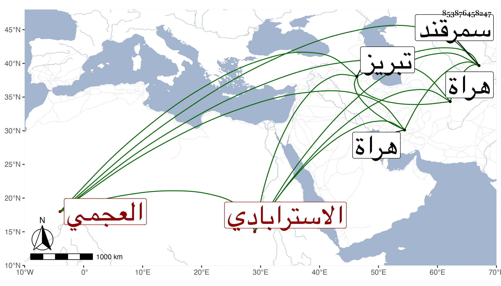

0902Sakhawi.DawLamic.ITO20230111-ara1.EIS1600.853876458247
Biography ID: 853876458247
586
فضل الله أبو الفضل الاسترابادي العجمي واسمه عبد الرحمن ولكنه إنما كان يعرف بالسيد فضل الله حلال جور أي يأكل حلال وينظر إن كان هو الماضي قبل اثنين . كان على قدم التجريد والزهد بحيث حكى عنه أنه لم يذق منذ عمره لأحد طعاما ولا قبل شيئا وأنه كان يخيط الطواقي الأعجمية ويقتات بثمنها مع فضيلة تامة ومشاركة جيدة في علوم ونظم ونثر وحفظت عنه كلمات عقد له بسببها مجالس بكيلان وغيرها بحضرة العلماء والفقهاء ثم مجلس بسمرقند حكم فيه بإراقة دمه فقتل بالنجاء من عمل تبريز سنة أربع وكان له أتباع ومريدون في سائر الأقطار لا يحصون كثرة متميزون بلبس اللباد الأبيض على رأسهموبدنهم ويصرحون بالتعطيل وإباحة المحرمات وترك المفترضات وأفسدوا بذلك عقائد جماعة من الجقناي وغيرهم من الأعاجم ولما كثر فسادهم بهراة وغيرها أمر القان معين الدين شاه رخ بن تيمور لنك بإخراجهم من بلاده وحرض على ذلك وثب عليه رجلان منهم وقت صلاة الجمعة وهو بالجامع وضرباه فجرحاه جرحا بالغا لزم منه الفراش مدة طويلة واستمر به حتى مات وقتل الرجلان من وقتهما أشر قتلة ، وهو في عقود المقريزي .
